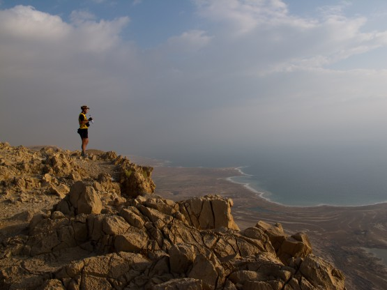
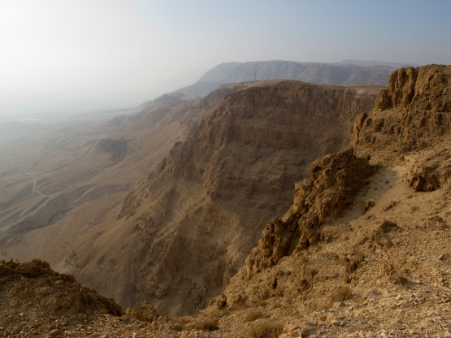
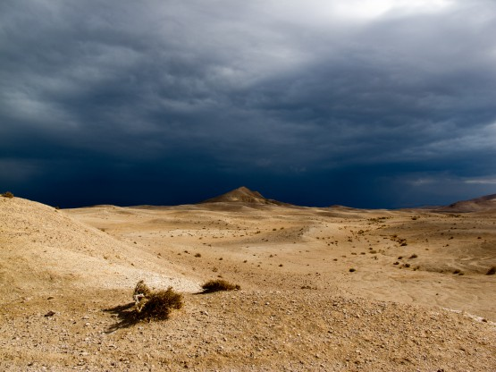
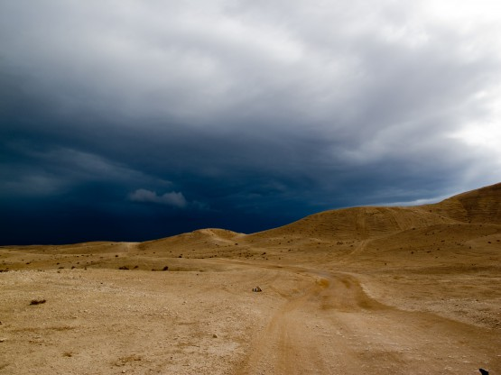
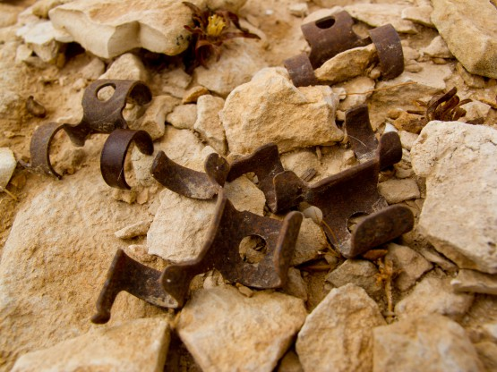
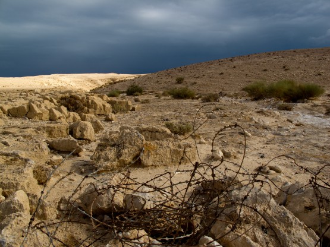
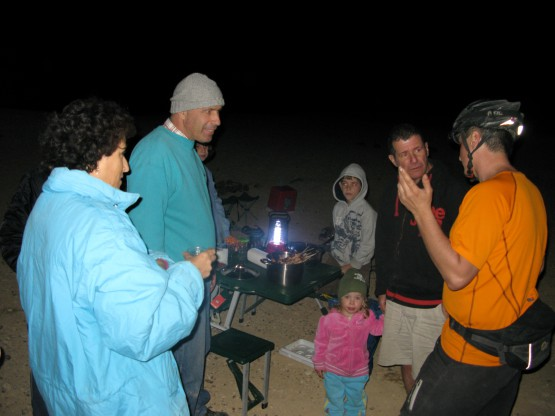
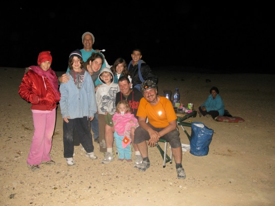

Шестой день ВелоХануки.
Будильник не заводили, но проснулись около 5 часов. Вокруг красиво, как всегда, дорога немножко под гору. Заехали на видовую площадку над морем - не пожалели.


Быстро докатили до Мецукей Драгота. Я ожидал увидеть там магазин, и купить воды, так как вкусная монастырская пошла очень бодро, а план сегодняшнего дня предполагал большой пробег без населенки. Возможно, магазин внутри и есть, но все обнесено забором, а ворота закрыты, рядом еще одни ворота, судя по флагу - территория принадлежит танковым войскам.
На воротах часовой, по-русски не говорит, но весьма доброжелательный. Спросили воды, сбегал в караулку (метров 100), принес. Представляю себе ситуацию, что я подхожу к часовому, охраняющему некий объект у нас. Сбегает ли он за водичкой?. . . сомневаюсь. Ни одного дня без хороших людей 

Интрига дня состояла в том, что следующий участок был нарисован мной по карте, треков найти не удалось. Правда я спрашивал на форуме velik.org и Игорь подтвердил, что там нормальные джиповки, но некое волнение оставалось. Идея заключалась в том, чтобы проехать верхами до Арада, а не сваливаться к мертвому морю.
День запомнился отличными видами. Вокруг ходили синие тучи, добавлявшие драматизма в композицию панорам. Казалось, что сейчас нас накроет ух каким дождем, но дождик только побрызгал 5 минут. Можно сказать - приняли душ. Если я правильно понял ребят, то это первый дождик с апреля месяца. Всю поездку у меня было ощущение, что вся пустыня покрыта слоем мелкой известковой пыли. С первого дня наши рюкзаки и вещи пропитались этой пылью, было постоянное ощущение стянутой кожи на руках, но самое неприятное, что очень сушило горло и нос, постоянно хотелось пить. Возможно все это с непривычки, в нашем сыром климате такого точно нет. Одним словом прошедший дождик только порадовал нас, но никак не повлиял на сухость пустыни - пыль осталась на месте.



Кстати еще одна интересная особенность известковой пыли и самих местных меловых пород - они отлично отражали свет наших фонарей P7, настолько хорошо, что даже в экономичном режиме можно было ехать на хорошей скорости, в наших сочных грязях такое невозможно. В итоге практически на весь поход нам хватило по одному аккумулятору.
Но вернемся в пустыню. Много раз за этот день нам попадались следы далеко не мирной истории этих мест. Гильзы от M16 и от АКМ, соединительные звенья пулеметных лент и колючая проволока. На всякий случай мы старались не сходить с дороги, опасались наступить на мину.


В этот день я выполнил свою норму по поломкам. Сначала от багажника отвалилась лишняя деталь, которую удалось быстро примотать изолентой. Потом я обратил внимание, что подозрительно часто в ботинках появляются камни, причем относительно большие. Как потом выяснилось, подошвы моих шимановских тапок разорвались по всей длине. Хорошо, что это был предпоследний день похода.
Несмотря на то что дорожки оказались действительно хорошими, темнота нас застала еще очень далеко от Арада. Спасибо Игорю, который подкинул вариант сокращения маршрута, мы им воспользовались, все равно в темноте много не рассмотришь. Решили ехать до упора, чтобы завтра все же успеть на Мертвое море, очень хотелось.
Ночная езда по горным грунтовкам весьма специфична, каждый большой камень добавляет остроты ощущений, особенно если рядом обрыв, глубина которого не пробивается фонарем. Вверх шли уже исключительно пешком, сказывалась усталость. Пешком Андрей обгонял меня метров на 50 на каждом большом подъеме. Нет, пешком я точно не силен ходить.
Прошло несколько часов довольно однообразной ночной езды и на горизонте замаячили огни нескольких машин. Подсознательно начал искать на экране GPS возможность объехать, но дорога одна. Вот ведь как глубоко сидит привычка не ждать ничего хорошего от ночных встреч с людьми. Поравнялись, к нам бегут люди и что-то кричат, понятно, что это евреи, но не понятно, что кричат, приблизились, оказывается дети. Перешли на английский, оказывается, зовут нас покушать курочку гриль. Неожиданно.
Пока я манерно колебался, Андрей решительно повернул к столу. Как выяснилось, несколько еврейских семей выехали на природу с детьми. Наперебой задавали нам вопросы: куда, откуда, в каких странах были. . . люди задают удивительно похожие вопросы. В очередной раз пожалел о своем уровне английского. Его, безусловно, хватает в магазине, транспорте и т.п. , но вот, чтобы непринужденно поговорить с хорошими людьми - явно мало.

Эти замечательные люди накормили нас шашлыком, рисом, напоили водой, кофе, затейливым чаем с корицей и молоком. Опять пожалел, что не взял сувениров. Попытались угостить радушных хозяев орехами, типа из России, в ответ получили еще больше орехов в подарок. Пожалуй, меня после этой поездки будет очень сложно убедить, что евреи жадные.

После такого количества шашлыка на велосипед садиться не хотелось, но делать нечего надо ехать до упора. Упор настал часов в 11. Все, баста, спим, Андрей даже отказался от чая. Попытались повтыкать в карту, поняли только, что первоначальный план завершающего дня придется корректировать, так как до Арада мы не доехали километров 10, но это по прямой, а если учесть набор высоты в полкилометра, то будем мы там не рано.
Комментарий Андрея
Да, устали сильно. Да ещё ветер поднялся. Было влом заниматься чаем. Тем более угощение от встречи в ночи не осело… Но для Сани разложил горелку и защиту от ветра, и неимоверным кайфом залез в палатку, в спальник. Лениво жуя «Сникерс» и запивая водой, с удовольствием слушал завывания ветра. На этой стоянке мы в первый и в последний раз поставили палатку с тентом. До этого ночевали либо в спальниках под открытым небом, либо в палатке без тента. Когда Саня залез в палатку, обсудив завтрашний день, приняли «соломоново» решение: дойдём до автовокзала в Араде, а там посмотрим. На том и порешили.
Статистика дня: Проехали: 65.4 km, за время: 16 hours, 0 minutes, 24 seconds, набор высоты: 1522.7 m, спуск: 1248.8 m, средняя скорость: 4.1 km/h
Трек.